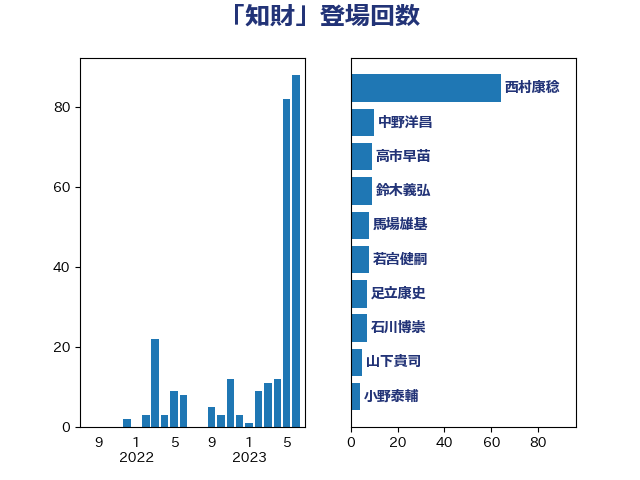

単語「知財」

| 美延映夫 | 日本維新の会 | 22 回 |
| 梶山弘志 | 自由民主党 | 20 回 |
| 安達澄 | 無所属 | 11 回 |
| 加田裕之 | 自由民主党 | 10 回 |
| 浅野哲 | 国民民主党 | 10 回 |
| 若宮健嗣 | 自由民主党 | 8 回 |
| 関芳弘 | 自由民主党 | 8 回 |
| 浅田均 | 日本維新の会 | 6 回 |
| 礒崎哲史 | 国民民主党 | 6 回 |
| 鈴木義弘 | 国民民主党 | 6 回 |
| ながえ孝子 | 無所属 | 5 回 |
| 井上信治 | 自由民主党 | 5 回 |
| 宮内秀樹 | 自由民主党 | 5 回 |
| 森本真治 | 立憲民主党 | 5 回 |
| 野中厚 | 自由民主党 | 5 回 |
| 武田良太 | 自由民主党 | 4 回 |
| 茂木敏充 | 自由民主党 | 4 回 |
| 里見隆治 | 公明党 | 4 回 |
| 篠原豪 | 立憲民主党 | 3 回 |
| 紙智子 | 日本共産党 | 3 回 |
| 西銘恒三郎 | 自由民主党 | 3 回 |
| 三谷英弘 | 自由民主党 | 2 回 |
| 大野敬太郎 | 自由民主党 | 2 回 |
| 小林鷹之 | 自由民主党 | 2 回 |
| 田村貴昭 | 日本共産党 | 2 回 |
| 笠井亮 | 日本共産党 | 2 回 |
| 藤巻健太 | 日本維新の会 | 2 回 |
| 足立康史 | 日本維新の会 | 2 回 |
| 鈴木俊一 | 自由民主党 | 2 回 |
| 長坂康正 | 自由民主党 | 2 回 |
| 三浦信祐 | 公明党 | 1 回 |
| 中西祐介 | 自由民主党 | 1 回 |
| 伊藤孝恵 | 国民民主党 | 1 回 |
| 佐藤啓 | 自由民主党 | 1 回 |
| 小熊慎司 | 立憲民主党 | 1 回 |
| 山田太郎 | 自由民主党 | 1 回 |
| 平井卓也 | 自由民主党 | 1 回 |
| 林芳正 | 自由民主党 | 1 回 |
| 櫻井周 | 立憲民主党 | 1 回 |
| 牧義夫 | 立憲民主党 | 1 回 |
| 田村まみ | 国民民主党 | 1 回 |
| 田村憲久 | 自由民主党 | 1 回 |
| 田村智子 | 日本共産党 | 1 回 |
| 田畑裕明 | 自由民主党 | 1 回 |
| 石川昭政 | 自由民主党 | 1 回 |
| 舟山康江 | 国民民主党 | 1 回 |
| 荒井優 | 立憲民主党 | 1 回 |
| 藤川政人 | 自由民主党 | 1 回 |
| 重徳和彦 | 立憲民主党 | 1 回 |
| 鈴木憲和 | 自由民主党 | 1 回 |
| 阿部司 | 日本維新の会 | 1 回 |
| 高木かおり | 日本維新の会 | 1 回 |